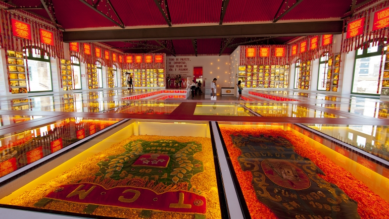

Paço do Frevo
O Paço do Frevo é um museu dedicado ao ritmo musical pernambucano que lhe dá nome. O frevo é um ritmo sincopado e contagiante, considerado Patrimônio Imaterial da Humanidade pela UNESCO.
O museu está localizado na Praça da Torre Malakoff, no Recife Antigo. O acervo do museu conta com instrumentos musicais, figurinos, fotografias e documentos que contam a história do frevo.
O Paço do Frevo também oferece uma programação cultural diversificada, com apresentações de frevo, workshops, palestras e cursos.
Rua do Bom Jesus
A Rua do Bom Jesus é uma das ruas mais charmosas do Recife Antigo. A rua é repleta de casarões coloridos do século XVII, que abrigam lojas, restaurantes e bares.
A rua é um ótimo lugar para passear, fazer compras e experimentar a gastronomia local.
A Rua do Bom Jesus também é um importante centro cultural. A rua abriga o Centro Cultural Cais do Sertão, que conta a história do sertão nordestino, e o Museu de Arte Sacra de Pernambuco.

Outros pontos turísticos
Além do Marco Zero, do Paço do Frevo e da Rua do Bom Jesus, o Recife Antigo abriga outros pontos turísticos que merecem ser visitados, como:
- Igreja da Madre de Deus: igreja barroca do século XVIII
- Capela Dourada: capela barroca do século XVII
- Torre Malakoff: torre de observação do século XIX
- Mercado da Boa Vista: mercado histórico do século XIX
- Instituto Ricardo Brennand: museu de arte e cultura
- Oficina Cerâmica Francisco Brennand: museu e centro de produção de cerâmica